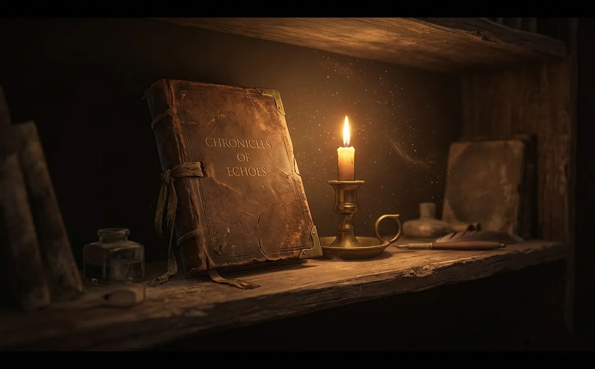
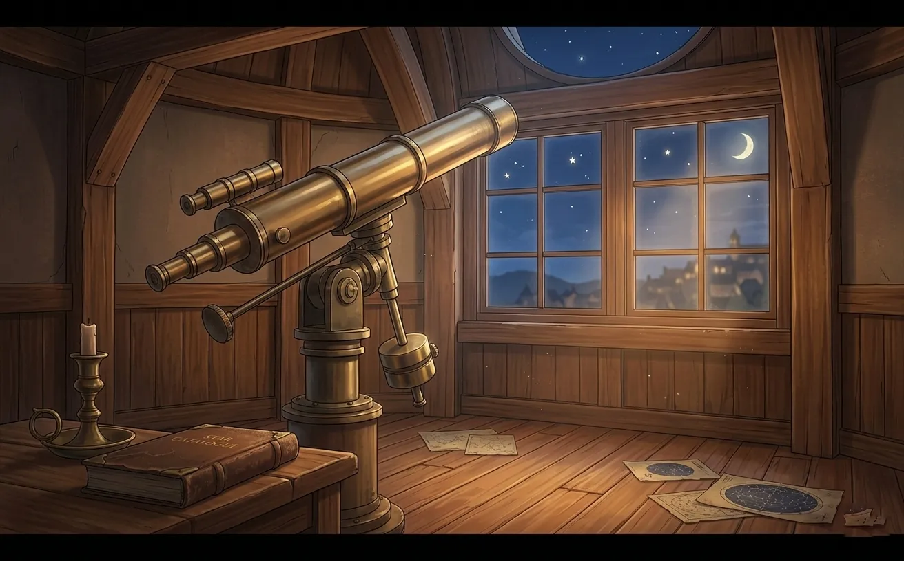
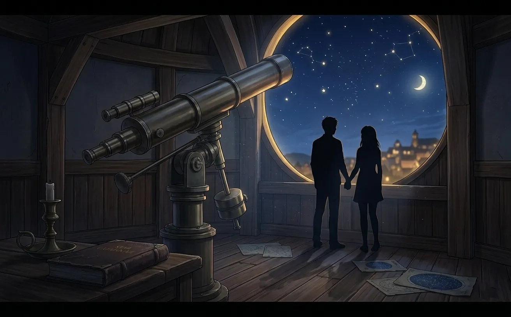
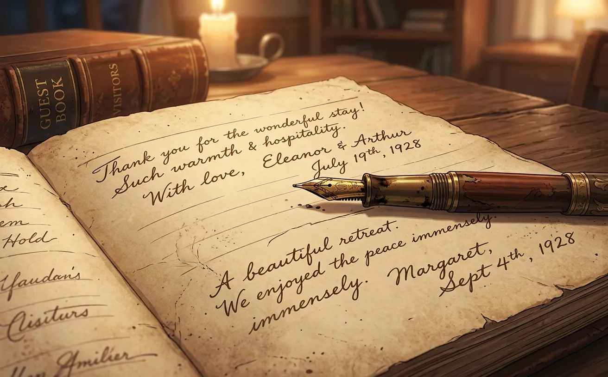
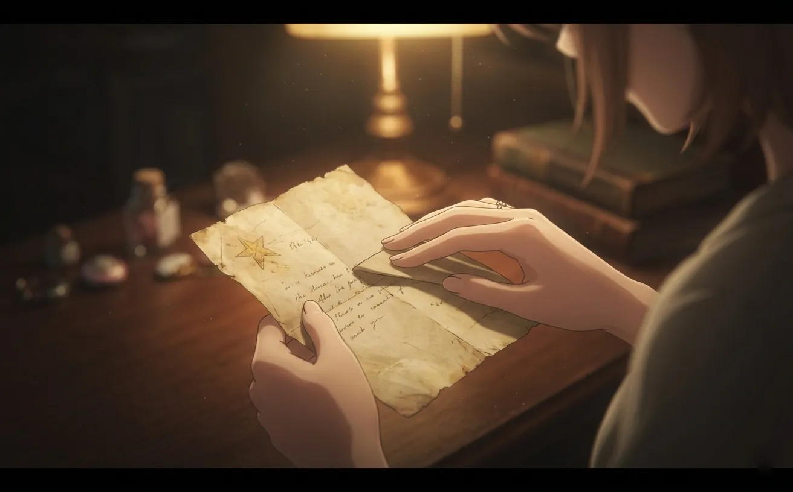

two hundred years of visitors. one guestbook. and one entry he never expected to find.
There's a guestbook in the corner of the observatory.
It sits on a small wooden shelf, next to a stack of old star charts and a broken compass. Most people don't notice it. It's old. Worn. The leather cover is cracked and faded, the pages yellowed with age.
But Xavier knows it's there. He's known for two hundred years.
The guestbook is a record of everyone who visited the observatory. Children who wanted to be astronauts. Lovers who pointed at constellations. Old men who remembered the stars from their youth.
And Xavier has read every single entry.

Figure 1: The guestbook. Two hundred years of strangers. One person who mattered.
He never writes in it himself. That would be... conspicuous. A name that never ages. Handwriting that doesn't change. Questions.
But he reads. And remembers. And wonders if any of the people who scribbled their names in that book ever looked at the stars and thought of him.
They didn't. They didn't know he existed.
But he knew them. In a way. For the few minutes they stood in his observatory, they were the most important people in the world.
And then they left. Like everyone does.
Except one.
"Visited tonight with my daughter. She pointed at Jupiter and asked if people live there. I said no. She was disappointed. I'll take her again next week."
The first entry. Xavier remembers reading it by candlelight. The observatory was new then. The telescope was the best in the country. People came from miles away to see the stars through its lens.
Thomas and his daughter. He never saw them again. But he remembered her name from the guestbook. Elizabeth. She would have been... dead now. For a long time.
Xavier closed the book that night and didn't open it again for years.
But he couldn't stay away. The guestbook was proof that he wasn't alone. Proof that people still looked up. Still wondered. Still hoped.
He needed that. Even if he didn't want to admit it.

Figure 2: The observatory in 1847. New. Hopeful. Full of possibility.
Over the years, the entries changed. Handwriting styles shifted. The ink went from quill to fountain pen to ballpoint. The names were different. The stories were the same.
People came. They looked. They left. They died.
And Xavier stayed.
"Brought my fiancée here. She said yes under the stars. Best night of my life."
Xavier remembered that night. He'd been fixing the telescope when the couple arrived. They didn't notice him. They were too busy looking at each other.
He'd watched them from the shadows. The way he held her hand. The way she laughed. The way they stood under the open dome, surrounded by stars, and promised forever.
He wondered, sometimes, if they kept their promise. If they grew old together. If they ever came back.
The guestbook didn't say.
Xavier noticed patterns. People came to the observatory for different reasons. Some for science. Some for wonder. Some for love.
The ones who came for love were his favorite. They didn't care about the telescope. They didn't ask about the stars. They just wanted a beautiful place to say something important.
He envied them. Their certainty. Their courage. Their willingness to risk rejection.
He'd never had that. He'd been waiting too long. And waiting makes you afraid. Afraid to speak. Afraid to reach out. Afraid to find out that the person you've been waiting for doesn't feel the same way.

Figure 3: He watched them from the shadows. He never stopped watching.
"Came here after my mother died. She used to tell me stories about the constellations. I wanted to see them one last time for her."
This one broke his heart.
Sarah was young. Maybe twenty. She stood under the dome for hours, not moving, just looking up. Xavier brought her tea. She didn't notice. She was somewhere else. Somewhere in the stars, with her mother.
He didn't speak to her. He didn't know what to say. "I'm sorry" felt too small. "I understand" felt like a lie — he didn't understand. Not really. He'd never had a mother. He'd never had anyone.
But he sat with her. In silence. Until she left.
She wrote in the guestbook on her way out. He read it after she was gone. He still thinks about her sometimes. Wonders if she's okay. If she found someone to tell her stories.
He hopes so.
"The telescope is broken again. I'll fix it tomorrow. — X"
He'd written this one himself. Just once. A private joke. A reminder that he was there. That he existed. That someone had to take care of the place.
No one ever saw it. The guestbook was in the corner. No one looked at it. No one knew it was there.
But he knew.
And that was enough.
She came on a Tuesday.
Xavier was on the platform, adjusting the lens. He heard the door creak. Footsteps. Soft. Hesitant.
"Hello?"
He looked down. A woman stood in the doorway. Dark hair. Light eyes. Something about her face.
"We're closed," he said.
"I know. The door was open."
He stared at her. Something in his chest shifted. He didn't know why.
She stayed until dawn. They didn't talk much. But when she left, she paused at the door. Looked at the guestbook. Picked it up. Opened it.
Xavier held his breath.
"To the man in the observatory: thank you for the stars. I hope you find what you're looking for. — someone who was lost, but not anymore"

Figure 4: Her handwriting. He memorized every loop and line.
He read it after she left. Once. Twice. Three times.
"I hope you find what you're looking for."
She didn't know. How could she? She'd only just met him. She didn't know that he'd been looking for two hundred years. That she was the first person who made him feel like he might have found it.
He closed the book. Opened it again. Read her words one more time.
Then he did something he'd never done before.
Xavier tore the page out of the guestbook.
Carefully. Along the seam. So it wouldn't be obvious. So no one would know.
He folded it once. Twice. Three times. Put it in his pocket.
He's carried it with him ever since. He doesn't know why. Sentiment, maybe. Proof that someone saw him. That someone wrote a message just for him — even if she didn't know it.
He's thought about writing back. About leaving a note for her in the guestbook. About saying "I've been waiting for you" or "you're the one I've been looking for" or "please come back."
He never does.
She came back. Not the next day. Not the next week. But she came back.
She didn't mention the guestbook. He didn't mention the missing page.
But she started coming more often. Tuesdays. Thursdays. Sometimes Sundays.
And every time she left, Xavier would check the guestbook. Not the one on the shelf — the one in his pocket. The page he'd torn out. The words she'd written.
"I hope you find what you're looking for."
He had. He just hadn't told her yet.

Figure 5: The page. Folded. Worn at the edges. Never leaves his pocket.
The guestbook is still in the corner of the observatory.
New people write in it now. New names. New stories. New hopes. Xavier still reads them. Still remembers them. Still wonders.
But he doesn't need them anymore.
Because he has her.
"To the man in the observatory: thank you for the stars. I hope you find what you're looking for. — someone who was lost, but not anymore"
Figure 6: The stars are still there. They always are. So is he. So is she.
He never told her about the guestbook. Never showed her the missing page. Never admitted that he'd been carrying her words around like a talisman.
Maybe someday. When the time is right. When he's ready to let her know how long he's been waiting.
But for now, the page stays in his pocket. Folded. Worn. A secret between him and the stars.
"I found what I was looking for. I just haven't told her yet."